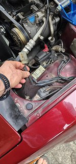

-
Yesterday I took my Z to a car wash first time in years, I have a guy that comes to my house for hand wash but he's been super busy and I wanted to get my new cover on my dusty car. While putting a bit of wax on it I decided to clean up under the hood a little and found this part unglugged. There was nothing to plug this into and I have never seen this before. I am not a DIY'er so I probably cannot name half of the parts under the hood. This is coming out of the drivers side wheel well.
 -
Hmmm, it might be the plug for the PRW. I don't see the PRW in your photo. It is basically the equivalent of an ignition module. I would think your car would not run at all without it though....?") Shiro #93
Shiro #93
Mods: A/C Removal, Custom Lightweight W-series crank pulley, K&N Air Filter, Electric Fan, EGR/AIV/CC removal -
Whatis a PRW? I never saw thsi before and no real work has been done under the hood for a long time except for oil changes. This is driver side and very odd but there doesn't seem to be antyhing there to plug into -
What he is calling a PRW is the ignitor. It is the component that the ecu sends an ignition signal to and it fires the ignition coil. You have one. Its the original Z31 ignitor; I see it in your photo. Its the square component above the coil with 3 wire plug.Originally posted by badq45t View Post
The plug you are holding is an unused part of the harness built in for a future smog component called the AIV (air injection valve) starting in the 86 year. The 84-85 cars don't have it and usually there is a cap on that plug.Last edited by 707Redz31; 06-01-2023, 11:30 AM. -
Thanks completley amazing I have owned this car for 39 years and never noticed it!! Thanks 707 for the help, I was nearly giving up on this board I spend more time on Mercedes Boards now since this one and NICO are sorta dead
I spend more time on Mercedes Boards now since this one and NICO are sorta dead
-
Glad to help. It is pretty dead. But i’m getting fed up with how crappy the Facebook pages are, with the scammers and off-topic crap. Im hoping people will see the light and come back. Any given day there are 75 guests logged on, just not members. So it proves this site still has a use. -
I check in here most every weekday. I took a looooonng break from facebook, but it is active for owners of my other vehicles so i've been on there more as of late.
I'm on the /r/300zx subreddit most of the time. I think the forum is still used more of a searchable archive than a social platform anymore.
84 AE/Shiro #683/Shiro #820/84 Turbo -
That plug could be for the turbo cooling fan that the 84/85 turbos had. If so, it looks like it has been removed like mine is now. What year and model do you have?Restore it, Don't crush it. They don't make them like this anymore.
Scott
85 Turbo, original owner, restored
93 NA Babied

-
I just bought an 86t last week and finally signed up just now to reply to this and say I’ve found the forum to be an invaluable resource. (I’m in this thread because I had this same question about my own aiv connector.) Thank you for very much for keeping it around; losing all the information on here would be an absolute disaster for any Z31 owner.Originally posted by Z_Karma View Post

Copyright © 2006–. All rights reserved. Privacy Policy